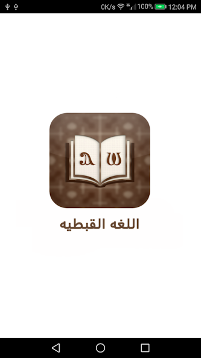

Personal Project · Mobile App
Learn Coptic Language App
A mobile app for learning the ancient Coptic language — letters, pronunciation, vocabulary, numbers, and a full Arabic↔Coptic dictionary.
A mobile app for learning the ancient Coptic language — letters, pronunciation, vocabulary, numbers, and a full Arabic↔Coptic dictionary.

The Learn Coptic Language App is a personal passion project built to help preserve and promote the ancient Coptic language. The app provides a structured learning path covering the Coptic alphabet with correct pronunciation, numbers, common vocabulary, and a bilingual Arabic↔Coptic dictionary — making it an accessible tool for both beginners and those reconnecting with their heritage.
Coptic is one of the world's oldest languages, but resources for learning it in a mobile-friendly, interactive format are scarce. I built this app to make the language more accessible — especially to younger generations of the Coptic community — combining my software engineering skills with a personal passion for cultural preservation.
Rendering Coptic script correctly across iOS and Android required custom font embedding and careful handling of RTL and LTR text in the same view.
Recording, encoding, and bundling high-quality pronunciation audio efficiently without inflating the app size required careful asset management.
Building a fast, fuzzy-matching dictionary search across a large bilingual word list within a mobile SQLite database.